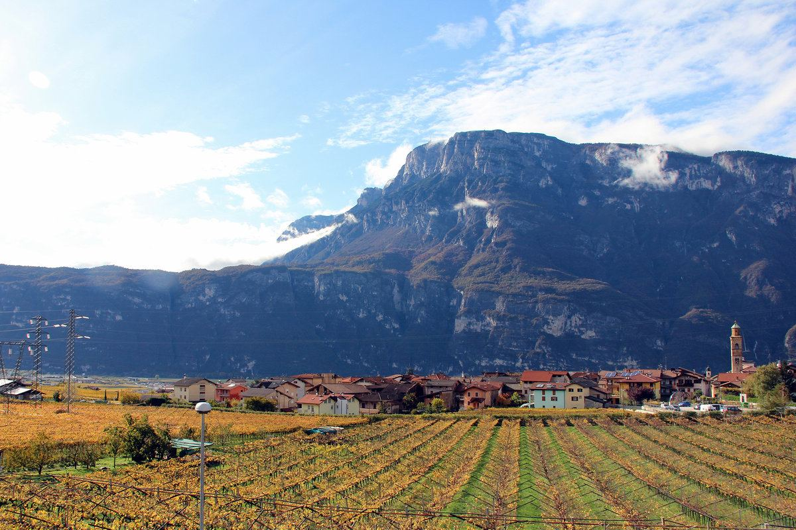
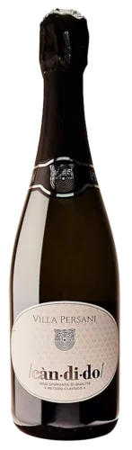
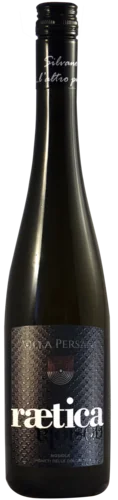
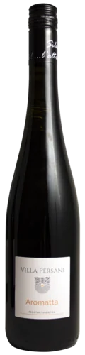
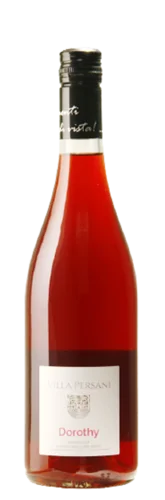
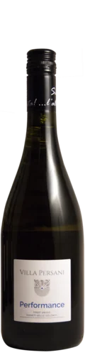
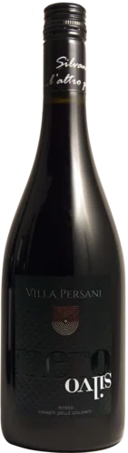
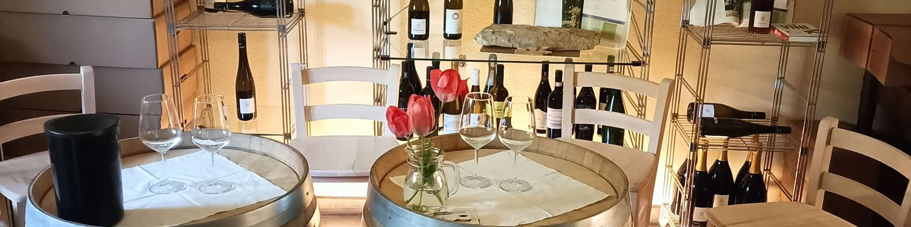

L'azienda
Villa Persani è a Pressano, un piccolo paese a nord di Trento, sulle colline dove da secoli si coltiva la vite. È nata nel 2006 dall'idea di Silvano di dare valore all'arte che da generazioni fa parte della famiglia Clementi: sull'esempio del padre Renzo ha recuperato i terreni di famiglia, e dal 2012 trasforma i frutti in vino e succhi.
Fin dai primi impianti la scelta è stata un'agricoltura attenta all'ambiente e al territorio. Oggi tutti i vigneti e i frutteti sono certificati biologici ICEA.
Nel 2014 l'azienda ha ripristinato una zona a est di Pressano coltivata a vite in passato e abbandonata dagli anni Venti, conservando i vecchi terrazzamenti e i muretti a secco, e lì ha ridato spazio al vitigno di Pressano, la Nosiola.
L'altro punto di vista
«Le pratiche chimiche non possono sostenere la fertilità della terra.»
È il paradosso da cui parte Silvano: l'industria non può reggere l'agricoltura, come le pratiche chimiche non possono reggere la terra. Da qui l'idea di offrire a chi beve una sensazione nuova e insieme antica, quella della naturalità.
I vini
Bianchi, rossi e bollicine da Nosiola, Schiava, Pinot Grigio e da varietà resistenti, che chiedono pochissimi trattamenti.
-

Candido
Spumante metodo classico, brut nature
Solo uve souvignier gris, varietà resistente coltivata a zero trattamenti. Trenta mesi sui lieviti. Il nome è quello del nonno Candido.
-

Rætica Nosiola
Nosiola, IGT Vigneti delle Dolomiti
La prima Nosiola di Villa Persani, dai vigneti abbandonati e ripristinati sulle colline di Pressano.
-

Aromatta
Bianco aromatico da varietà resistenti
Profumi di frutto della passione e agrumi, buona acidità. Da aperitivo, e perfetto con gli asparagi bianchi di Zambana.
-

Schiava Dorothy
Schiava in purezza, IGT
Dalla collina di Pressano, da vigneti piantati negli anni Trenta e negli anni Sessanta. Fresco e fruttato.
-

Performance
Pinot Grigio, IGT Vigneti delle Dolomiti
Pinot Grigio in purezza, maturato in legno di acacia, con sentori di miele, frutta e fieno. Pochi solfiti.
-

Nero Silvo
Rosso, IGT Dolomiti
Un anno in rovere francese. Frutta rossa matura, mora di gelso e amarena, grande struttura. Con carne rossa e selvaggina.
Silvo Magnum, edizione limitata
Spumante brut nature da varietà resistenti, in magnum da 1,5 litri, 36 o 60 mesi sui lieviti.
I succhi
Succo di mela fatto solo con le nostre mele, e succo d'uva senza zuccheri né conservanti aggiunti. Tutti e due biologici e vegani.

Riconoscimenti
- Nel Segno di ZierockMerano Wine Festival 2023
- The WineHunter AwardMerano Wine Festival 2018, 2021, 2022
- PIWI Wine Award2018, 2019, 2020, 2021, 2022
- Autochtona Award, Rætica Nosiola2020
Dalla pagina dei riconoscimenti del sito di Villa Persani.
Ordini e visite
Per ordinare vini e succhi, o per venire a trovarci in cantina, basta chiamare o scrivere.